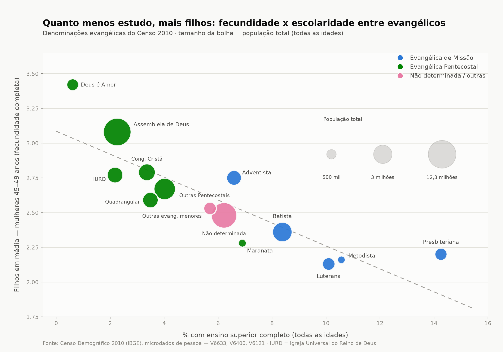
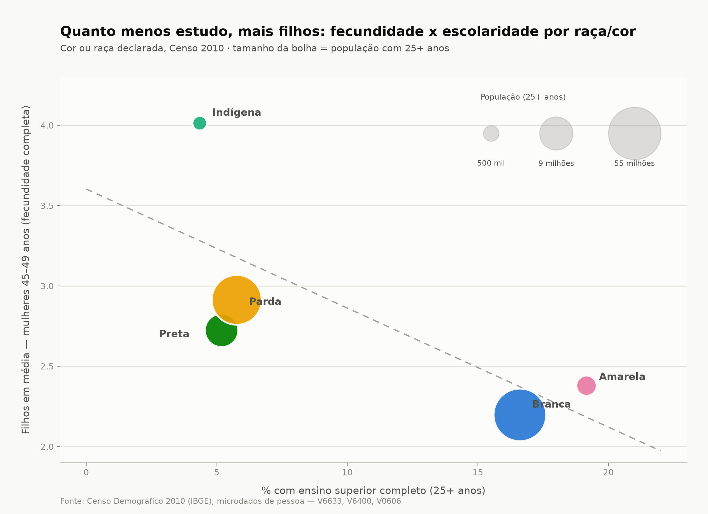
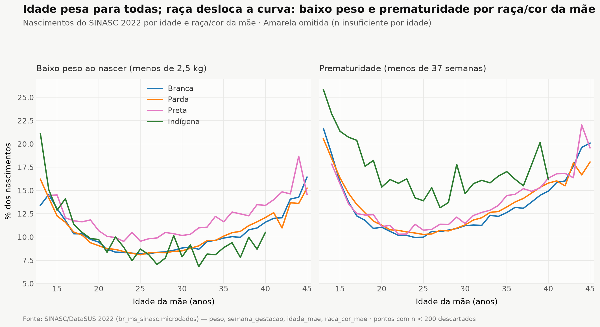
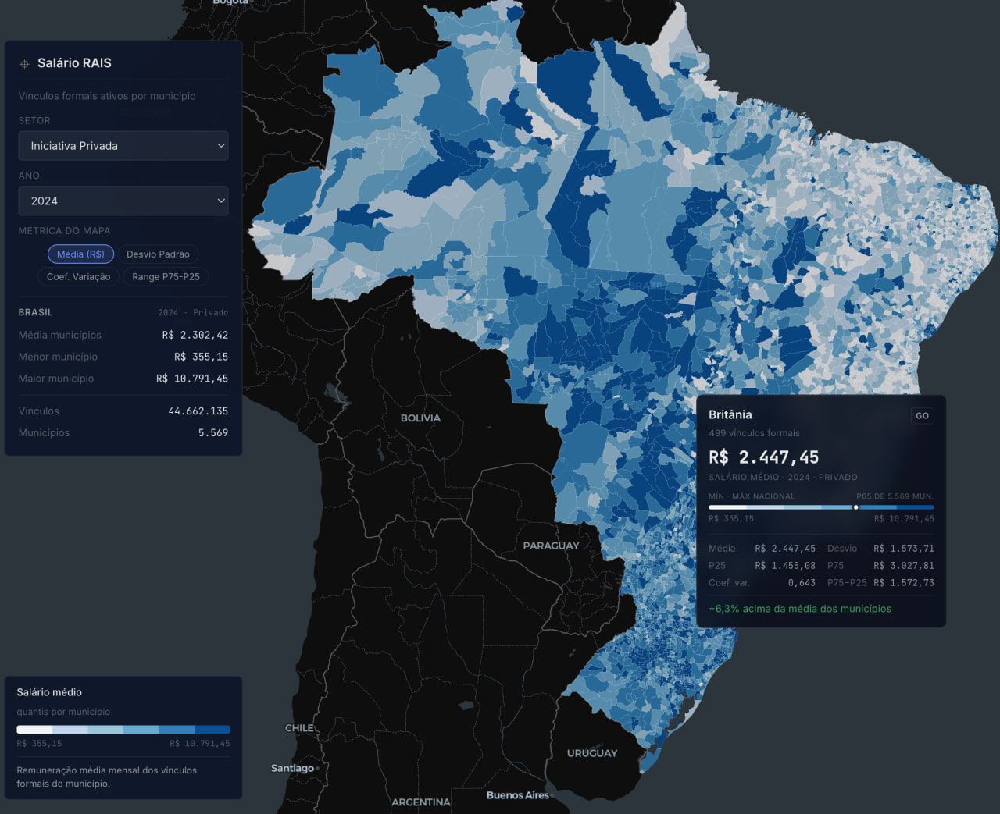

8 explorações · IBGE, CNEFE, Receita Federal, SINASC
ミxplorando Novas Tecnologias Cartográficas
Hoje, através de uma tela, um indivíduo pode inter-relacionar, interagir, representar e navegar entre milhões de dados. O avanço nas tecnologias ampliou drasticamente nossa capacidade de mapear o território, as redes e os fluxos.
01 · Rio de Janeiro: cada ponto é um CNPJ
A imagem parece uma foto aérea noturna — mas cada ponto de luz é um estabelecimento de Pessoa Jurídica registrado na Receita Federal. Ao plotar a localização de cada estabelecimento ativo do CNPJ, o próprio tecido urbano se desenha: avenidas, centros comerciais e periferias emergem sem que nenhum mapa de fundo seja necessário.
Não é uma foto aérea: é o cadastro da Receita Federal projetado sobre o território.


Explore a versão interativa em ミ.xyz/dataviz/rio/ibge.
02 · Todas as igrejas do país
O cadastro CNPJ registra a natureza jurídica de cada estabelecimento, o que permite isolar as organizações religiosas e plotá-las sobre o território. O resultado é um retrato da infraestrutura religiosa do país — e das assimetrias quando a comparamos com escolas, unidades de saúde e sindicatos.
O mapa nacional


O perfil religioso de cada município
Cruzando o Censo do IBGE com a localização dos municípios, é possível colorir o país pelo perfil religioso declarado da população: quanto mais amarelo, mais católico o município; o roxo tende a indicar predominância evangélica.
Explore a versão interativa em ミ.xyz/dataviz/religioes.

Mais igrejas que unidades de saúde

22 dos 27 estados brasileiros têm o dobro de estabelecimentos religiosos em relação a unidades de saúde.
Entidades religiosas ultrapassam os sindicatos

E as escolas?

03 · Natalidade em números
O Censo Demográfico do IBGE e o SINASC (Sistema de Informações sobre Nascidos Vivos) registram, para cada nascimento no Brasil, a idade, a raça, a escolaridade e a religião da mãe — cruzando essas variáveis, dá para ver como elas se relacionam com a fecundidade e com a saúde do bebê ao nascer.
Quanto mais estudo, mais tarde os filhos

Fecundidade e escolaridade entre evangélicos

Fecundidade e escolaridade por raça

O risco é da idade, não do diploma

Raça desloca a curva do risco

04 · Nova Friburgo em três dimensões
O Cadastro Nacional de Endereços para Fins Estatísticos (CNEFE) registra cada endereço visitado pelo IBGE. Restringindo ao município de Nova Friburgo (RJ), dá para reconstruir a cidade casa a casa — e extrudar cada residência pela quantidade de moradores.
Residências com altura relativa ao número de moradores

Explore a versão interativa em ミ.xyz/dataviz/friba/pop_3d.
Todas as residências do município

Onde a cidade se concentra


Onde as empresas nascem

05 · Confecções e a pandemia
Cada CNPJ carrega a atividade econômica (CNAE), a data de abertura e, quando é o caso, a data de baixa. Filtrando as confecções ativas do polo de moda íntima de Nova Friburgo, dá para mapear a geografia do setor — e assistir, registro a registro, ao impacto da pandemia.
A distribuição das confecções

Abertas e fechadas durante a pandemia

Que setores fecharam depois de outros?
Ordenando as baixas de CNPJ no tempo, aparece uma sequência: alguns setores econômicos fecharam primeiro, outros resistiram mais — um rastro temporal da crise atravessando a economia local.

06 · Redes societárias
O cadastro CNPJ publica o quadro societário de cada empresa. Ligando sócios a empresas — e empresas a outros sócios —, as relações de poder econômico viram um grafo navegável: quem está ao lado de quem, e através de quê.
Empresários friburguenses com mais empresas

As empresas do dono do Jogo do Tigrinho

As sociedades de um senador

Empresas suíças com sede no Brasil

07 · Atlas Salarial do Brasil
A Relação Anual de Informações Sociais (RAIS) registra cada vínculo formal de trabalho no país. Agregando os vínculos por município, o atlas mostra onde os salários se concentram — e onde o trabalho formal praticamente desaparece do mapa.

Explore o atlas interativo em ミ.xyz/dataviz/rais/mapa/.
08 · Censos habitacionais: 1970–2000
Cada diagrama Sankey lê um censo habitacional do IBGE em três camadas: a situação do domicílio (rural, urbano…), a condição de ocupação (próprio, alugado, cedido…) e o tipo de moradia. Seguindo os fluxos de 1970, 1980 e 2000, a transformação habitacional do país aparece de uma vez só.
Censo de 1970
Padrões habitacionais da era pré-urbanização em massa: os domicílios rurais próprios ainda rivalizam com os urbanos, e o tipo de construção predominante é o rústico.
---
config:
sankey:
showValues: false
useMaxWidth: true
---
sankey-beta
"Urbano","Sem declaracao",1168
"Suburbano","Sem declaracao",26
"Rural","Sem declaracao",775
"Urbano","Proprio ja quitado",6602220
"Suburbano","Proprio ja quitado",345236
"Rural","Proprio ja quitado",6514120
"Urbano","Proprio em aquisicao",1021044
"Suburbano","Proprio em aquisicao",33202
"Rural","Proprio em aquisicao",111461
"Urbano","Alugado",3575026
"Suburbano","Alugado",109313
"Rural","Alugado",300507
"Nao classificado (situacao)","Alugado",2
"Urbano","Cedido",906408
"Suburbano","Cedido",40742
"Rural","Cedido",920018
"Urbano","Outra condicao",139868
"Suburbano","Outra condicao",13135
"Rural","Outra condicao",2859867
"Urbano","Nao classificado (condicao)",16
"Sem declaracao","Rustico",1434
"Sem declaracao","Duravel",535
"Proprio ja quitado","Rustico",9912955
"Proprio ja quitado","Duravel",3548621
"Proprio em aquisicao","Rustico",1032172
"Proprio em aquisicao","Duravel",133535
"Alugado","Rustico",3465003
"Alugado","Duravel",519845
"Cedido","Rustico",1235874
"Cedido","Duravel",631294
"Outra condicao","Rustico",1659069
"Outra condicao","Duravel",1353801
"Nao classificado (condicao)","Rustico",16
Fonte: IBGE, Censo Demográfico 1970 — situação do domicílio → condição de ocupação → tipo de construção.
Censo de 1980
Início da grande urbanização: as cidades e vilas já concentram a maior parte dos domicílios, e a vida em apartamento começa a aparecer na estatística.
---
config:
sankey:
showValues: false
useMaxWidth: true
---
sankey-beta
"Aglomerado rural","Alugado",19572
"Aglomerado rural","Cedido por empregador",13165
"Aglomerado rural","Cedido por particular",8836
"Aglomerado rural","Ignorado",437
"Aglomerado rural","Outra condicao",3330
"Aglomerado rural","Proprio em aquisicao",11155
"Aglomerado rural","Proprio ja quitado",124728
"Area urbana isolada","Alugado",6098
"Area urbana isolada","Cedido por empregador",1893
"Area urbana isolada","Cedido por particular",1910
"Area urbana isolada","Ignorado",38
"Area urbana isolada","Outra condicao",342
"Area urbana isolada","Proprio em aquisicao",1212
"Area urbana isolada","Proprio ja quitado",15536
"Cidade ou vila","Alugado",1343492
"Cidade ou vila","Cedido por empregador",96021
"Cidade ou vila","Cedido por particular",277264
"Cidade ou vila","Ignorado",6427
"Cidade ou vila","Outra condicao",54910
"Cidade ou vila","Proprio em aquisicao",344477
"Cidade ou vila","Proprio ja quitado",2334531
"Zona rural","Alugado",34671
"Zona rural","Cedido por empregador",429076
"Zona rural","Cedido por particular",170478
"Zona rural","Ignorado",3637
"Zona rural","Outra condicao",46914
"Zona rural","Proprio em aquisicao",8230
"Zona rural","Proprio ja quitado",1125161
"Alugado","Apartamento",192360
"Alugado","Casa",1211473
"Cedido por empregador","Apartamento",15897
"Cedido por empregador","Casa",524258
"Cedido por particular","Apartamento",15198
"Cedido por particular","Casa",443290
"Ignorado","Apartamento",1420
"Ignorado","Casa",9119
"Outra condicao","Apartamento",3131
"Outra condicao","Casa",102365
"Proprio em aquisicao","Apartamento",107008
"Proprio em aquisicao","Casa",258066
"Proprio ja quitado","Apartamento",115652
"Proprio ja quitado","Casa",3484304
Fonte: IBGE, Censo Demográfico 1980 — situação do domicílio → condição de ocupação → tipo de moradia.
Censo de 2000
Virada do milênio: classificação urbano/rural simplificada, consolidação da vida urbana e da casa própria quitada — e o apartamento como categoria estabelecida.
---
config:
sankey:
showValues: false
useMaxWidth: true
---
sankey-beta
"Rural","Alugado",67876
"Rural","Cedido de outra forma",334512
"Rural","Cedido por empregador",776836
"Rural","Ignorado",70761
"Rural","Outra condicao",68061
"Rural","Proprio em aquisicao",78000
"Rural","Proprio quitado",3476050
"Urbano","Alugado",2206025
"Urbano","Cedido de outra forma",855342
"Urbano","Cedido por empregador",207996
"Urbano","Ignorado",108024
"Urbano","Outra condicao",170945
"Urbano","Proprio em aquisicao",1146742
"Urbano","Proprio quitado",10707242
"Alugado","Apartamento",315423
"Alugado","Casa",1907731
"Alugado","Comodo",50747
"Cedido de outra forma","Apartamento",35972
"Cedido de outra forma","Casa",1124609
"Cedido de outra forma","Comodo",29273
"Cedido por empregador","Apartamento",21095
"Cedido por empregador","Casa",956863
"Cedido por empregador","Comodo",6874
"Ignorado","Outro",178785
"Outra condicao","Apartamento",8251
"Outra condicao","Casa",222231
"Outra condicao","Comodo",8524
"Proprio em aquisicao","Apartamento",287630
"Proprio em aquisicao","Casa",933642
"Proprio em aquisicao","Comodo",3470
"Proprio quitado","Apartamento",604698
"Proprio quitado","Casa",13508004
"Proprio quitado","Comodo",70590
Fonte: IBGE, Censo Demográfico 2000 — situação do domicílio → condição de ocupação → tipo de moradia.
O que os três censos mostram
- Aceleração da urbanização: em 1970, os domicílios rurais ainda rivalizavam com os urbanos; em 2000, o meio urbano concentra cerca de três vezes mais domicílios que o rural.
- Consolidação da casa própria: o domicílio próprio já quitado é a condição dominante nos três censos — e amplia sua vantagem sobre o aluguel.
- Acesso ao crédito: a categoria "próprio em aquisição" cresce de forma expressiva entre 1970 e 2000, refletindo a expansão do financiamento habitacional.
- A era do apartamento: praticamente invisível em 1970, o apartamento aparece em 1980 e se estabelece como categoria relevante em 2000.
🔗 Repositório fonte: análise dos censos habitacionais do IBGE
Sobre os dados
Experimentamos visualizar dados públicos, integrando os Censos do IBGE, o CNEFE e o Cadastro da Receita Federal: dados populacionais por perfil religioso, escolaridade, cor e idade; empresas com atividades econômicas, sociedades, organizações religiosas, batalhões, prefeituras, comunidades quilombolas e bancos — a maioria com localização geográfica —, potencialmente co-relacionados com o TSE, as Despesas da Câmara, as Frentes Parlamentares e as Emendas PIX.
A cartografia digital permite espacializar saberes complexos — como padrões econômicos, práticas religiosas, ou redes de poder — que antes ficavam dispersos ou ocultos nos dados brutos. Essa espacialização transforma grandes volumes de dados em interfaces cognitivas acessíveis, mobilizando tanto percepção visual quanto análise crítica. (Drucker, 2011)